산업안전기사 (2009-08-30 기출문제)
1과목: 안전관리론
1. 도수율이 12.5인 사업장에서 근로자 1명에게 평생 동안약 몇 건의 재해가 발생하겠는가? (단, 평생근로년수는 40년, 평생근로시간은 잔업시간 4000시간을 포함하여 80000시간으로 가정한다.)
- 1
- 2
- 4
- 12
(정답률: 60%)

2. 새로운 자료나 교재를 제시하고, 문제점을 피교육자로 하여금 제기하도록 하거나 의견을 여러 가지 방법으로 발표하게 하여 청중과 토론자간 활발한 의견 개진과 합의를 도출해가는 토의방법은?
- 포럼(Forum)
- 패널 디스커션(Panel discussion)
- 심포지엄(symposium)
- 자유토의(Free discussion)
(정답률: 80%)
3. 재해누발자의 유형 중 상황성 누발자와 관련이 없는 것은?
- 작업이 어렵기 때문에
- 기능이 미숙하기 때문에
- 심신에 근심이 있기 때문에
- 기계설비에 결함이 있기 때문에
(정답률: 38%)
4. 다음 중 “Near Accident"에 대한 내용으로 가장 적절한 것은?
- 사고가 일어난 인접지역
- 사망사고가 발생한 중대재해
- 사고가 일어난 지점에 계속 사고가 발생하는 지역
- 사고가 일어나더라도 손실을 전혀 수반하지 않는 재해
(정답률: 77%)
5. 다음 중 위험예지훈련의 문제해결 4라운드에 속하지 않는 것은?
- 현상파악
- 본질추구
- 대책수립
- 원인결정
(정답률: 87%)
6. 다음 중 무재해 운동 추진의 3요소가 아닌 것은?
- 잠재 위험요인 발굴
- 안전 활동의 라인화
- 최고 경영자의 자세
- 직장 자주 활동의 활성화
(정답률: 67%)
7. 안전교육방법의 4단계 중 1단계에 해당되는 것은?
- 실제로 시켜본다.
- 작업의 내용을 설명한다.
- 작업의 중요점을 강조한다.
- 작업에 대한 흥미를 갖게 한다.
(정답률: 70%)
8. 다음 중 산업안전보건위원회에 관한 설명으로 틀린 것은?
- 안전관리자, 보건관리자는 사용자위원에 해당한다.
- 상시 근로자 100인 이상을 사용하는 사업장에 설치, 운영한다.
- 회의는 정기회의와 임시회의로 구분하되, 정기회의는 6월마다 위원장이 소집한다.
- 위원장은 근로자위원과 사용자위원 중 각 1인을 공동 위원장으로 선출할 수 있다.
(정답률: 66%)
9. 다음 중 망각을 파지하고 파지를 유지하기 위한 방법으로 적절하지 않은 것은?
- 적절한 지도계획 수립과 연습을 한다.
- 학습하고 장시간 경과 후 연습을 하는 것이 효과적이다.
- 학습한 내용은 일정한 간격을 두고 때때로 연습시키는 것도 효과가 있다.
- 학습 자료는 학습자에게 의미를 알도록 질서있게 학습 시키는 것이 좋다.
(정답률: 85%)
10. 관리그리드 이론에서 인간관계 유지에는 낮은 관심을 보이지만 과업에 대해서는 높은 관심을 가지는 리더십의 유형에 해당하는 것은?
- (1, 1)형
- (1, 9)형
- (9, 1)형
- (9, 9)형
(정답률: 75%)
11. 산업안전보건법상 사업내 안전・보건교육에서 근로자 정기 안전・보건교육의 교육내용에 해당하지 않는 것은? (단, 산업안전보건법 및 일반관리에 관한 사항은 제외한다.)
- 산업보건 및 직업병 예방에 관한 사항
- 산업안전 및 사고 예방에 관한 사항
- 유해ㆍ위험 작업환경 관리에 관한 사항
- 기계・기구 또는 설비의 안전・보건점검에 관한 사항
(정답률: 56%)
12. 작업에 대한 평균에너지 값이 4kcal/min 이고, 휴식시간 중의 에너지 소비량을 1.5kcal/min 으로 가정할 때, 프레스 작업의 에너지가 6kcal/min 이라고 하면 60분간의 총 작업시간 내에 포함되어야 하는 휴식시간은 약 얼마인가?
- 17.14분
- 26.67분
- 33.33분
- 42.86분
(정답률: 62%)
13. 버드(Bird)의 재해구성비율에 따를 경우 40명의 경상 재해자가 발생하였을 경우 중상의 재해자는 몇 명 정도가 발생하겠는가?
- 1명
- 2명
- 4명
- 10명
(정답률: 69%)
14. 다음 중 산업안전보건법상 근로자에 대한 일반건강진단의 실시 시기가 올바르게 연결된 것은?
- 사무직에 종사하는 근로자 : 1년에 1회 이상
- 사무직에 종사하는 근로자 : 2년에 1회 이상
- 사무직외의 업무에 종사하는 근로자 : 6월에 1회 이상
- 사무직외의 업무에 종사하는 근로자 : 2년에 1회 이상
(정답률: 80%)
15. 다음 중 주의의 특성이 아닌 것은?
- 일반성
- 방향성
- 변동성
- 선택성
(정답률: 55%)
16. 다음 중 산업안전보건법상 “화학물질 취급장소에서의 유해・위험 경고”에 사용되는 안전・보건표지의 색도기준으로 옳은 것은?
- 7.5R 4/14
- 2.5Y 8/12
- 7.5PB 2.5/7.5
- 5G 5.5/6
(정답률: 78%)
17. 다음 중 재해의 원인을 설명한 4M의 내용이 잘못 연결된 것은?
- Man : 동료, 상사
- Machine : 설비의 고장, 결함
- Media : 작업정보, 작업환경
- Management : 작업방법, 인간관계
(정답률: 74%)
18. 방진마스크의 사용 조건 중 산소농도의 최소기준으로 옳은 것은?
- 16%
- 18%
- 21%
- 23.5%
(정답률: 82%)
19. 암실에서 정지된 소광점을 응시하면 광점이 움직이는것 같이 보이는 현상을 운동의 착각현상 중 ‘자동운동’이라 한다. 다음 중 자동운동이 생기기 쉬운 조건에 해당되지 않는 것은?
- 광점이 작은 것
- 대상이 단순한 것
- 광의 강도가 클 것
- 시야의 다른 부분이 어두운 것
(정답률: 69%)
20. 의식의 레벨(phase)을 5단계로 구분할 때 의식의 신뢰도가 가장 높은 단계는?
- phase Ⅰ
- phase Ⅱ
- phase Ⅲ
- phase Ⅳ
(정답률: 59%)
2과목: 인간공학 및 시스템안전공학
21. 다음 중 인간이 기계보다 우수한 기능이라 할 수 있는 것은?
- 귀납적 추리
- 신뢰성 있는 반복작업
- 신속하고 일관성 있는 반응
- 대량의 암호화된(coded) 정보의 신속한 보관
(정답률: 82%)
22. 작업공정 중에 규정된 대로 수행하지 않고 “괜찮다.”라고 생각하여 자기 주관대로 추측을 하여 행동한 결과 재해가 발생한 경우를 가리키는 용어는?
- 억측판단
- 근도반응
- 생략행위
- 초조반응
(정답률: 83%)
23. 다음 중 병렬계 시스템에 대한 특성이 아닌 것은?
- 요소(要素)의 중복도가 늘어날수록 계(系)의 수명은 길어진다.
- 요소(要素)의 수가 많을수록 고장의 기회는 줄어든다.
- 요소(要素)의 어느 하나라도 정상이면 계(系)는 정상이다.
- 계(系)의 수명은 요소(要素) 중에서 수명이 가장 짧은 것으로 정해진다.
(정답률: 76%)
24. 지수분포를 따르는 A 제품의 평균수명은 5000시간이다. 이 제품을 연속적으로 6000시간동안 사용할 경우 고장없이 작동할 확률은?
- 0.3011
- 0.4346
- 0.5654
- 0.6989
(정답률: 42%)
25. 다음 중 결함수분석(FTA) 절차에서 가장 먼저 수행해야 하는 것은?
- FT(fault tree)도를 작성한다.
- cut set을 구한다.
- minimal cut set을 구한다.
- Top 사상을 정의한다.
(정답률: 77%)
26. 시스템이 복잡해지면, 확률론적인 분석기법만으로는 분석이 곤란하여 computer simulation을 이용한다. 다음 중 이러한 기법에 근거를 두고 있는 것은?
- 미분방정식 기법
- 적분방정식 기법
- 차분방정식 기법
- 몬테카를로 기법
(정답률: 59%)
27. 위험분석기법 중 높은 고장 등급을 갖고 고장모드가 기기 전체의 고장에 어느 정도 영향을 주는가를 정량적으로 평가하는 해석 기법은?
- FTA
- CA
- ETA
- FHA
(정답률: 38%)
28. 다음 중 동작경제의 원칙으로 틀린 것은?
- 가능한 한 관성을 이용하여 작업을 한다.
- 공구의 기능을 결합하여 사용하도록 한다.
- 휴식시간을 제외하고는 양손이 같이 쉬도록 한다.
- 작업자가 작업 중에 자세를 변경할 수 있도록 한다.
(정답률: 67%)
29. FT도에서 ① ~ ⑤ 사상의 발생확률이 모두 0.⑤ 일 경우 T 사상의 발생 확률은 약 얼마인가?
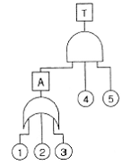
- 0.00036
- 0.142625
- 0.2262
- 0.25
(정답률: 68%)
30. 실현 가능성이 동일한 4개의 대안이 있을 경우 총 정보량은 몇 bit 인가?
- 0.6
- 1.2
- 2
- 4
(정답률: 65%)
31. 다음 중 인간공학의 정의로 가장 적합한 것은?
- 인간의 과오가 시스템에 미치는 영향을 최소화하기 위한 연구분야
- 인간, 기계, 물자, 환경으로 구성된 복잡한 체계의 효율을 최대로 활용하기 위하여 인간의 한계 능력을 최대화하는 학문분야
- 인간, 기계, 물자, 환경으로 구성된 복잡한 체계의 효율을 최대로 활용하기 위하여 인간의 생리적, 심리적 조건을 시스템에 맞추는 학문분야
- 인간의 특성과 한계 능력을 공학적으로 분석, 평가하여 이를 복잡한 체계의 설계에 응용함으로 효율을 최대로 활용할 수 있도록 하는 학문분야
(정답률: 73%)
32. 다음 중 소음에 대한 대책으로 가장 거리가 먼 것은?
- 소음원의 통제
- 소음의 격리
- 소음의 분배
- 적절한 배치
(정답률: 59%)
33. 다음 중 청각 표시장치에서 경계 및 경보 신호를 선택, 설계할 때의 지침으로 틀린 것은?
- 배경소음과 다른 진동수를 갖는 신호를 사용한다.
- 300m 이상의 장거리용으로는 1000Hz 이상의 진동수를 사용한다.
- 칸막이를 통과하는 신호는 500Hz 이하의 진동수를 사용한다.
- 귀는 중음역에 가장 민감하므로 500~3000Hz의 진동수를 사용한다.
(정답률: 60%)
34. 다음 중 암호체계의 사용상에 있어 일반적인 지침으로 적절하지 않은 것은?
- 다차원의 암호보다 단일 차원화된 암호가 정보 전달이 촉진된다.
- 정보를 암호화한 자극은 검출이 가능하여야 한다.
- 암호를 사용할 때는 사용자가 그 뜻을 분명히 알 수있어야 한다.
- 모든 암호 표시는 감지장치에 의해 검출될 수 있고, 다른 암호 표시와 구별될 수 있어야 한다.
(정답률: 61%)
35. 다음 중 인체 측정 자료를 이용하여 설계하고자 할 때 적용기준이 잘못 연결된 것은?
- 의자의 높이 - 조절식 설계기준
- 안내 데스크 - 평균치를 기준으로 한 설계기준
- 선반 높이 - 최대 집단치를 기준으로 한 설계기준
- 출입문 - 최대 집단치를 기준으로 한 설계기준
(정답률: 71%)
36. 다음 중 path set에 관한 설명으로 옳은 것은?
- 시스템의 약점을 표현한 것이다.
- Top 사상을 발생시키는 조합이다.
- 시스템이 고장나지 않도록 하는 사상의 조합이다.
- 일반적으로 Fussell Algorithm을 이용한다.
(정답률: 78%)
37. 작업장 내의 설비 3대에서는 각각 80dB 과 86dB 및 78dB의 소음을 발생시키고 있다. 이 작업장의 전체 소음은 약 몇 dB 인가?
- 81.3
- 85.5
- 87.5
- 90.3
(정답률: 33%)
38. 다음 중 보전(Maintenance)을 행하기 위한 주요 작업과 가장 거리가 먼 것은?
- 점검 및 검사
- 병목작업의 개선
- 청소, 급유 등의 서비스
- 조정, 수리 교환 등의 시정조치
(정답률: 68%)
39. 인간-기계 시스템에서 시스템의 설계를 다음과 같이 구분할 때 제3단계인 기본설계에 해당되지 않는 것은?
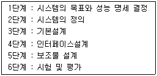
- 작업 설계
- 화면 설계
- 직무 분석
- 기능 할당
(정답률: 60%)
40. 다음 중 [그림]과 같은 특정위험을 분석하기 위한 차트를 활용하는 위험분석기법은?
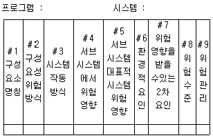
- 예비위험분석(PHA)
- 결함위험분석(FHA)
- 사건수분석(ETA)
- 고장형태와 영향분석(FMEA)
(정답률: 44%)
3과목: 기계위험방지기술
41. 연삭작업 중 숫돌차가 파괴되는 원인으로 가장 거리가 먼 것은?
- 충격을 받았을 때
- 숫돌의 측면을 사용할 때
- 회전수가 규정이상 초과 할 때
- 내외면의 플랜지 지름이 같을 때
(정답률: 78%)
42. 확동 클러치의 봉합개소의 수는 4개, 300SPM(stroke perminute)의 완전회전식 클러치 기구가 있는 프레스의 양수기동식 방호장치의 안전거리는 약 몇 mm 이상이어야 하나?
- 360
- 315
- 240
- 225
(정답률: 55%)
43. 다음 ( )안에 공통적으로 들어갈 내용으로 적합한 것은?
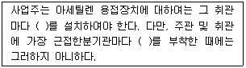
- 분기장치
- 자동발생 확인장치
- 유수 분리장치
- 안전기
(정답률: 80%)
44. 화물중량이 200kgf, 지게차의 중량이 400kgf, 앞바퀴에서 화물의 무게중심까지의 최단거리가 1m이면 지게차가 안정되기 위한 앞바퀴에서 지게차의 무게중심까지의 최단거리는 최소 몇 m를 초과해야하는가?
- 0.2m
- 0.5m
- 1m
- 3m
(정답률: 69%)
45. 반복 응력을 받게 되는 기계구조부분의 설계에서 허용 응력을 결정하기 위한 기초강도로 가장 적합한 것은?
- 항복점(Yield point)
- 극한 강도(Ultimate strength)
- 크리프 한도(Creep limit)
- 피로 한도(Fatigue limit)
(정답률: 59%)
46. 목재 가공용 둥근톱 기계의 안전작업으로 틀린 것은?
- 작업자는 톱날의 회전방향 정면에 서서 작업한다.
- 톱날이 재료보다 너무 높게 솟아나지 않게 한다.
- 두께가 얇은 재료의 절단에는 압목 등의 적당한 도구를 사용한다.
- 작업 전에 공회전 시켜서 이상 유무를 점검한다.
(정답률: 76%)
47. 크레인 로프에 2ton의 중량을 걸어 20m/sec2 가속도로 감아올릴 때 로프에 걸리는 총 하중은 몇 kgf 인가?
- 682
- 6082
- 7082
- 7802
(정답률: 62%)
48. 양중기에 사용하지 않아야 하는 와이어로프의 기준에 해당하지 않는 것은?
- 이음매가 있는 것
- 심하게 변형 또는 부식된 것
- 지름의 감소가 공칭지름의 5% 이상인 것
- 한 꼬임에서 끊어진 소선의 수가 10% 이상인 것
(정답률: 73%)
49. 목재 가공용 둥근톱에서 반발방지를 방호하기 위한 분할날의 설치조건이 아닌 것은?
- 톱날과의 간격 12mm 이내
- 톱날 후면날의 2/3 이상 방호
- 분할날 두께는 둥근 톱 두께 1.1배 이상
- 덮개 하단과 가공재 상면과의 간격은 15mm 이내로 조정
(정답률: 57%)
50. 프레스의 위험성에 대해 기술한 내용으로 틀린 것은?
- 부품의 송급・배출이 핸드 인 다이로 이루어지는 것은 작업 시 위험성이 크다.
- 마찰식 클러치 프레스의 경우 하강중인 슬라이드를 정지시킬 수 없어서 기계자체 기능상의 위험성을 내포하고 있다.
- 일반적으로 프레스는 범용성이 우수한 기계지만 그에 대응하는 안전조치들이 미비한 경우가 많아 위험성이 높다.
- 신체의 일부가 작업점에 노출되면 전단・협착 등의 재해를 당할 위험성이 매우 높다.
(정답률: 63%)
51. 로봇을 움직이지 않고 순서, 조건, 위치 및 기타 정보를 수치, 언어 등에 의해 교시하고, 그 정보에 따라 작업을 할수 있는 로봇은?
- 시퀀스 로봇
- 플레이백 로봇
- 수치 제어 로봇
- 지능 로봇
(정답률: 58%)
52. 원통의 내면을 선반으로 절삭시 안전상 주의할 점으로 옳은 것은?
- 공작물이 회전 중에 치수를 측정한다.
- 절삭유가 튀므로 면장갑을 착용한다.
- 절삭바이트는 공구대에서 길게 나오도록 설치한다.
- 보안경을 착용하고 작업한다.
(정답률: 75%)
53. 선반 작업 시 사용하는 방호장치에 해당하는 것은?
- 풀 아웃(pull out)
- 게이트 가드(gate guard)
- 스위프 가드(sweep guard)
- 실드(shield)
(정답률: 72%)
54. 기계설비의 정비, 청소, 급유, 검사, 수리 작업 시 유의 하여야 할 사항으로 거리가 먼 것은?
- 작업지휘자를 배치하여 갑자기 기계가동을 시키지 않도록 한다.
- 기계내부에 압축된 기체나 액체가 불시에 방출될 수 있는 경우에는 사전에 방출조치를 실시한다.
- 해당 기계의 운전을 정지한 때에는 기동장치에 잠금 장치를 하고 그 열쇠는 다른 작업자가 임의로 사용할수 있도록 눈에 띄기 쉬운 곳에 보관한다.
- 근로자에게 위험을 미칠 우려가 있는 때에는 근로자의 위험방지를 위하여 해당 기계를 정지시켜야 한다.
(정답률: 75%)
55. 기계의 원동기・회전축 등의 위험부위에 위험방지를 위한 조치로서 거리가 먼 것은?(오류 신고가 접수된 문제입니다. 반드시 정답과 해설을 확인하시기 바랍니다.)
- 원동기・회전축・기어・풀리・벨트 및 체인 등 근로자에게 위험을 미칠 우려가 있는 부위에는 덮개・울・슬리브 등을 설치하여야 한다.
- 회전축・기어・풀리 및 플라이 휠 등에 부속하는 키・핀 등의 기계요소는 돌출형으로 하거나 해당부 위에 덮개를 설치하여야 한다.
- 벨트 이음 부분에는 돌출된 고정구를 사용하여서는 아니된다.
- 원동기・회전축・기어 및 플라이휠・벨트부 등 위험이 미칠 우려가 있는 부분에는 건널다리를 설치하되, 건널다리에는 안전난간 및 미끄러지지 아니하는 구조의 발판을 설치하여야 한다.
(정답률: 66%)
56. 프레스기에 사용되는 방호장치 중 급정지 기구가 부착 되어야만 유효한 것은?
- 양수조작식
- 양수기동식
- 가드식
- 수인식
(정답률: 56%)
57. 휴대용 동력 드릴 작업 시 안전사항에 관한 설명으로 틀린 것은?
- 드릴의 손잡이를 견고하게 잡고 작업하여 드릴손잡이 부위가 회전하지 않고 확실하게 제어 가능하도록 한다.
- 절삭하기 위하여 구멍에 드릴날을 넣거나 뺄 때 반발에 의하여 손잡이 부분이 튀거나 회전하여 위험을 초래하지 않도록 팔을 드릴과 직선으로 유지한다.
- 드릴이나 리머를 고정시키거나 제거하고자 할 때 금속성 망치 등을 사용하여 확실히 고정 또는 제거한다.
- 드릴을 구멍에 맞추거나 스핀들의 속도를 낮추기 위해서 드릴날을 손으로 잡아서는 안된다.
(정답률: 75%)
58. 승강기 방호장치에 관한 다음 설명 중 ( ) 안에 들어갈 것으로 적절한 것은?
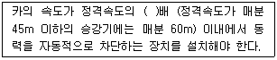
- 1.1
- 1.2
- 1.3
- 1.5
(정답률: 36%)
59. 소성가공의 종류에 해당하지 않는 것은?
- 선반 가공
- 하이드로포밍 가공
- 압연 가공
- 전조 가공
(정답률: 45%)
60. 다음 ( )안에 들어갈 용어로 알맞은 것은?
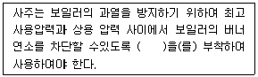
- 고저수위조절장치
- 압력방출장치
- 압력제한스위치
- 파열판
(정답률: 71%)
4과목: 전기위험방지기술
61. 최소착화에너지가 0.26mJ인 프로판 가스에 정전용량이 100pF인 대전물체로부터 대전된 정전기 방전에 의하여 착화될 수 있는 전압[V]은 어느 정도인가?
- 2240V
- 2260V
- 2280V
- 2300V
(정답률: 57%)
62. 다음의 기계기구 중 접지공사를 생략할 수 있는 것은?
- 전동기의 철대 또는 외함의 주위에 절연대를 설치한 것
- 440[V] 전동기를 설치한 곳.
- 변압기의 2차측 전로
- 저압용의 기계기구
(정답률: 49%)
63. 다음 중 전격의 위험도에 대한 설명 중 옳지 않은 것은?
- 인체의 통전전로에 따라 위험도가 달라진다.
- 몸이 땀에 젖어 있으면 더 위험하다.
- 전격시간이 길수록 더 위험하다.
- 전압은 전격위험을 결정하는 1차적 요인이다.
(정답률: 74%)
64. 부도체의 대전은 도체의 대전과는 달리 복잡해서 폭발화재의 발생한계를 추정하는데 충분한 유의가 필요하다. 다음 중 그 유의사항이 아닌 것은?
- 대전 상태가 매우 불균일한 경우
- 대전량 또는 대전의 극성이 매우 변화하는 경우
- 부도체 중에 국부적으로 도전율이 높은 곳이 있고 이것이 대전한 경우
- 대전되어 있는 부도체의 뒷면 또는 근방에 비접지 도체가 있는 경우
(정답률: 64%)
65. 다음 중 누전차단기의 선정시 주의사항으로 옳지 않은 것은?
- 동작시간이 0.1초 이하의 가능한 짧은 시간의 것을 사용하도록 한다.
- 절연저항이 5㏁ 이상이 되어야 한다.
- 정격부동작전류가 정격감도전류의 50% 이상이고 또한 이들의 차가 가능한 한 작은 값을 사용하여야 한다.
- 휴대용, 이동용 전기기기에 대해 정격 감도 전류가 50mA 이상의 것을 사용하여야 한다.
(정답률: 47%)
66. 정전기가 대전된 물체를 제전시키려고 한다. 다음 중 대전된 물체의 절연저항이 증가되어 제전의 효과를 감소시키는 것은?
- 접지한다.
- 건조시킨다.
- 도전성 재료를 첨가한다.
- 제전기를 설치한다.
(정답률: 53%)
67. 다음 중 인체통전으로 인한 전격(electric shock)의 정도의 결정에 있어 가장 거리가 먼 것은?
- 전압의 크기
- 통전시간
- 전류의 크기
- 신체 통전 경로
(정답률: 67%)
68. 정전 작업을 함에 있어서 작업시작 전에 행하여야 할 조치로서 옳지 않은 것은?
- 개로 개폐기의 시건 또는 표시
- 방전 코일이나 방전기구에 의한 정전 확인
- 작업 지휘자에 의한 작업내용의 주지 철저
- 일부 정전작업시 정전선로 및 활선 선로의 표시
(정답률: 40%)
69. 침대형판 전극간에 직류 고전압을 인가한 경우 간격내에서 정 corona가 진전해 가는 순서로 알맞은 것은?
- 글로우코로나(glow corona) → 브러시코로나(brush corona) → 스트리머코로나(streamer corona)
- 스트리머코로나(streamer corona) → 글로우코로나(glow corona) → 브러시코로나(brush corona)
- 글로우코로나(glow corona) → 스트리머코로나(streamer corona) → 브러시코로나(brush corona)
- 브러시코로나(brush corona) → 스트리머코로나(streamer corona) → 글로우코로나(glow corona)
(정답률: 49%)
70. 인체에 전기저항을 500Ω이라 한다면, 심실세동을 일으키는 위험한계 에너지는 약 몇[J] 인가? (단. 심실세동전류값 그림참조 의 Dalziel의 식을 이용하며, 통전시간은 1초로 한다.)
- 11.5[J]
- 13.6[J]
- 15.3[J]
- 16.2[J]
(정답률: 74%)
71. 피뢰기가 갖추어야 할 이상적인 성능 중 잘못된 것은?
- 제한전압이 낮아야 한다.
- 반복동작이 가능하여야 한다.
- 충격방전개시전압이 높아야 한다.
- 뇌전류의 방전능력이 크고 속류의 차단이 확실하여야 한다.
(정답률: 67%)
72. 내압방폭구조에서 안전간극을 적게하는 이유로 알맞은 것은?
- 최소점화에너지를 높게 하기 위해
- 폭발화염이 외부로 전파되지 않도록 하기 위해
- 폭발압력에 견디고 파손되지 않도록 하기 위해
- 쥐가 침입해서 전선 등을 갉아먹지 않도록 하기 위해
(정답률: 70%)
73. 비파괴검사 방법 중 자성체 분말을 뿌려 금속(자성체)파이프 등의 결함을 발견하는 방법이 있다. 이 방법은 어떤 매질상수에 비례하는 성질을 이용한 것인가?
- 도전율
- 투자율
- 유전율
- 저항율
(정답률: 40%)
74. 다음 중 직접접촉에 의한 감전방지 방법으로 적절하지 않은 것은?
- 충전부가 노출되지 않도록 폐쇄형 외함이 있는 구조로 할 것
- 충전부에 충분한 절연효과가 있는 방호망 또는 절연 덮개를 설치할 것
- 충전부는 출입이 용이한 전개된 장소에 설치하고 위험표시 등의 방법으로 방호를 강화할 것
- 충전부는 내구성이 있는 절연물로 완전히 덮어 감쌀 것
(정답률: 70%)
75. 전로에 과전류가 흐를 때 자동적으로 전로를 차단하는 장치들에 대한 설명으로 옳지 않은 것은?
- 과전류차단기는 시설하는 퓨즈 등 고압전로에 사용되는 비포장 퓨즈는 정격전류의 1.25배의 전류에 견디고 2배의 전류에는 120분 안에 용단되어야 한다.
- 과전류차단기로서 전압전로에 사용되는 배선용 차단기는 정격전류에 1배의 전류로 자동적으로 동작하지 않아야 한다.
- 과전류차단기로서 저압전로에 사용되는 퓨즈는 수평으로 붙인 경우 정격전류의 1.1배의 전류에 견디어야 한다.
- 과전류차단기로 시설하는 퓨즈 중 고압전로에 사용되는 포장퓨즈는 정격전류의 1.3배의 전류에 견디고 2배의 전류에는 120분 안에 용단되어야 한다.
(정답률: 36%)
76. 다음 중 아크방전의 전압전류 특성으로 가장 알맞은 것은?
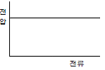
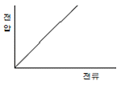
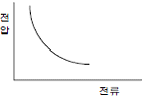
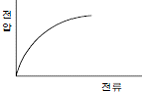
(정답률: 59%)
77. 1[C]을 갖는 2개의 전하가 공기 중에서 1[m]의 거리에 있을 때 이들 사이에 작용하는 정전력은?
- 8.854×10-12[N]
- 1.0[N]
- 3×103[N]
- 9×109[N]
(정답률: 56%)
78. 다음 분진 중 최소발화 에너지가 가장 낮은 것은?
- 커피
- 대두제
- 아연분
- 알루미늄
(정답률: 57%)
79. 다음 중 전기설비의 단락에 의한 전기화재를 방지하는 대책으로 가장 유효한 것은?(오류 신고가 접수된 문제입니다. 반드시 정답과 해설을 확인하시기 바랍니다.)
- 전원차단
- 제2종 접지
- 혼촉방지
- 경보기 설치
(정답률: 44%)
80. 전기설비의 방폭화를 추진하는 근본적인 목적으로 가장 알맞은 것은?
- 인화성물질 제거
- 점화원 제거
- 연쇄반응 제거
- 산소(공기) 제거
(정답률: 58%)
5과목: 화학설비위험방지기술
81. 설비의 주요 구조부분을 변경함으로서 공정안전보고서를 제출하여야 하는 경우가 아닌 것은?
- 플레어스택을 설치 또는 변경하는 경우
- 변경된 생산설비의 당해 전기정격용량이 300kW 이상 증가한 경우
- 제품의 변경을 위하여 반응기를 교체 또는 추가로 설치하는 경우
- 가스누출감지경보기를 교체 또는 추가로 설치하는 경우
(정답률: 65%)
82. 평활한 금속판 상에 한 방울의 니트로글리세린을 떨어트려 놓고 금속추로 타격을 행할 때 니트로글리세린 중에 아주 작은 기포가 존재한 경우, 기포가 존재하지 않을 때보다 작은 충격에 의해서도 발화가 일어난다. 이러한 현상의 원인으로 옳은 것은?
- 단열압축
- 정전기 발생
- 기포의 탈출
- 미분화 현상
(정답률: 46%)
83. 25°C 액화프로판가스 용기에 10㎏의 LPG가 들어있다. 용기가 파열되어 대기압으로 되었다고 한다. 파열되는 순간 증발되는 프로판의 질량은 약 얼마인가? (단, LPG의 비열은 2.4kJ/㎏⋅C° 이고 표준비점은 -42.2°C 증발잠열은 384.2kJ/㎏ 이라고 한다.)
- 0.42㎏
- 0.52㎏
- 4.20㎏
- 7.62㎏
(정답률: 42%)
84. 다음 표와 같은 혼합가스의 폭발범위(vol%)로 옳은 것은?
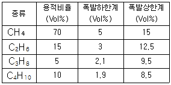
- 3.75 ~ 13.21
- 4.27 ~ 14.14
- 4.33 ~ 15.22
- 3.75 ~ 15.22
(정답률: 53%)
85. 다음 중 산업안전보건법상 위험물질의 종류와 해당물질이 올바르게 연결된 것은?
- 물반응성 물질 및 인화성 고체 - 황
- 산화성 액체 및 산화성 고체 - 아세톤
- 인화성 액체 - 하이드라진 유도체
- 폭발성물질 및 유기과산화물 - 셀룰로이드류
(정답률: 40%)
86. 다음 중 액체 표면에서 발생한 증기농도가 공기 중에서 연소하한농도가 될 수 있는 가장 낮은 액체온도를 무엇이라 하는가?
- 인화점
- 비등점
- 연소점
- 발화온도
(정답률: 52%)
87. 다음 중 분진 폭발에 관한 설명으로 틀린 것은?
- 폭발한계 내에서 분진의 휘발성분이 많을수록 폭발하기 쉽다.
- 분진이 발화 폭발하기 위한 조건은 인화성, 미분상태 공기 중에서의 교반과 유동 및 점화원의 존재이다.
- 가스폭발과 비교하여 연소의 속도나 폭발의 압력이 크고, 연소시간이 짧으며, 발생에너지가 크다.
- 폭발한계는 입자의 크기, 입도분포, 산소농도, 함유수 분, 인화성가스의 혼입 등에 의해 같은 물질의 분진 에서도 달라진다.
(정답률: 65%)
88. 다음 중 산업안전보건법에서 지정한 화학설비 및 그 부속설비의 종류에서 화학설비의 부속설비에 해당하는 것은?
- 응축기・냉각기・가열기 등의 열교환기류
- 반응기・혼합조 등의 화학물질 반응 또는 혼합장치
- 펌프류・압축기 등의 화학물질 이송 또는 압축설비
- 온도・압력・유량 등을 지시・기록하는 자동제어 관련설비
(정답률: 62%)
89. 산업안전보건법상 건조설비를 설치할 때 화재폭발을 방지하기 위하여 반드시 취해야 할 조치가 아닌 것은?
- 건조설비 내부를 청소가 쉬운 구조로 할 것
- 위험물건조설비의 열원으로는 직화를 사용할 것
- 내부의 온도가 국부적으로 상승되지 않는 구조로 할 것
- 위험물건조설비의 측벽이나 바닥은 견고한 구조로 할 것
(정답률: 71%)
90. 다음 중 공정안전보고서에 포함하여야 할 공정안전자료 의 세부내용이 아닌 것은?
- 유해・위험설비의 목록 및 사양
- 방폭지역 구분도 및 전기단선도
- 취급・저장하고 있거나 취급 저장하고자 하는 유해 위험물질의 종류 및 수량
- 사고발생시 각 부서・관련기관과의 비상연락체계
(정답률: 53%)
91. 다음 중 위험물의 취급에 관한 설명으로 틀린 것은?
- 모든 폭발성 물질은 석유류에 침지시켜 보관해야 한다.
- 압력이 높을수록 인화성 물질의 발화지연이 짧아진다.
- 가스 누설의 우려가 있는 장소에서의 점화원의 철저한 관리가 필요하다.
- 도전성이 나쁜 액체는 접지를 통한 정전기 방전 조치를 취한다.
(정답률: 71%)
92. 산업안전보건법에서 정한 공정안전보고서 제출대상 업종이 아닌 사업장으로서 유해・위험물질의 1일 취급량이 염소 10000㎏, 수소 20000㎏, 프로판 1000㎏, 톨루엔 2000㎏인 경우 공정안전보고서 제출대상 여부를 판단하기 위한 R값은 얼마인가? (단, 유해・위험물질의 규정수량은 다음 표를 참고한다)
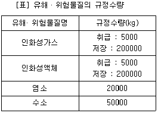
- 1.5
- 1.8
- 2.1
- 2.5
(정답률: 50%)
93. 소화기의 종류를 방출에 필요한 가압방법에 따라 분류할 때 화학반응에 의한 가압식 소화기가 아닌 것은?
- 산・알칼리 소화기
- 강화액 소화기
- 포말 소화기
- 할로겐화물 소화기
(정답률: 42%)
94. 자동화재 탐지설비의 감지기 종류 중 열감지가 아닌 것은?
- 차동식
- 정온식
- 광전식
- 보상식
(정답률: 72%)
95. 위험물을 저장・취급하는 화학설비 및 그 부속설비를 설치할 때 ‘단위공정시설 및 설비로부터 다른 단위공정시설및 설비의 사이’의 안전거리는 설비의 외면으로부터 몇 m이상이 되어야 하는가?
- 5m
- 10m
- 15m
- 20m
(정답률: 74%)
96. 다음 중 이상반응 또는 폭발로 인하여 발생되는 압력의 방출장치가 아닌 것은?
- 파열판
- 폭압방산공
- 화염방지기
- 가용합금안전밸브
(정답률: 61%)
97. 산업안전보건법상 인화성 물질이나 부식성 물질을 액체 상태로 저장하는 저장탱크를 설치하는 때에 위험물질이 누출 되어 확산되는 것을 방지하기 위하여 설치하여야 하는 것은?
- Flame arrester
- Ventstack
- 긴급방출장치
- 방유제
(정답률: 66%)
98. 다음 중 가스누출감지경보기의 선정기준, 구조 및 설치 방법에 대한 방법으로 틀린 것은?
- 암모니아를 제외한 인화성가스 누출감지경보기는 방폭성능을 갖는 것이어야 한다.
- 독성가스 누출감지경보기는 해당 독성가스 허용농도의 25%이하에서 경보기가 울리도록 설정하여야 한다.
- 하나의 감지대상 가스가 인화성이면서 독성인 경우에는 독성가스를 기준하여 가스누출감지경보기를 선정하여야 한다.
- 건축물 내에 설치되는 경우 감지대상가스의 비중이 공기보다 무거운 경우에는 건축물내의 하부에 설치하여야 한다.
(정답률: 58%)
99. 다음 중 질식소화에 관련된 것이 아닌 것은?
- CO2의 방사
- 물의 분무상 방사
- 가연물의 공급차단
- 분말의 방사
(정답률: 45%)
100. 산업안전보건법상의 독성물질은 쥐에 대한 4시간 동안의 흡입 실험에 의하여 실험동물의 50%를 사망시킬 수 있는 농도, 즉 LC50이 몇 ppm 이하인 물질을 말하는가?
- 1000
- 2500
- 4000
- 5000
(정답률: 67%)
6과목: 건설안전기술
101. 콘크리트 강도에 영향을 주는 요소로 거리가 먼 것은?
- 콘크리트 재령 및 배합
- 양생온도와 습도
- 타설 및 다지기
- 거푸집 모양과 형상
(정답률: 76%)
102. 다음 중 건립 중 강풍에 의한 풍압 등 외압에 대한 내력이 설계에 고려되었는지 확인하여야 하는 철골구조물이 아닌 것은?
- 단면이 일정한 구조물
- 기둥이 타이플레이트형인 구조물
- 이음부가 현장용접인 구조물
- 구조물의 폭과 높이의 비가 1:4 이상인 구조물
(정답률: 64%)
103. 다음 가설전기시설 중 산업안전보건관리비 사용항목에 포함되지 않는 것은?
- 접지시설
- 누전차단기
- 분전반
- 고압전선보호시설
(정답률: 54%)
104. 다음 중 운반작업 시 주의사항으로 옳지 않은 것은?
- 단독으로 긴 물건을 어깨에 메고 운반할 때에는 뒤쪽을 위로 올린 상태로 운반한다.
- 운반시의 시선은 진행방향을 향하고 뒷걸음 운반을 하여서는 안된다.
- 무거운 물건을 운반할 때 무게 중심이 높은 하물은 인력으로 운반하지 않는다.
- 어깨높이보다 높은 위치에서 하물을 들고 운반하여서는 안된다.
(정답률: 76%)
1⑤. 차량계 건설기계를 사용하여 작업하고자 할 때 작업계획서에 포함되어야 할 사항으로 적합하지 않은 것은?
- 사용하는 차량계 건설기계의 종류 및 성능
- 차량계 건설기계의 운행경로
- 차량계 건설기계에 의한 작업방법
- 차량계 건설기계의 유지보수방법
(정답률: 60%)
106. 다음 중 장비 자체보다 높은 장소의 땅을 굴착하는데 적합한 장비는?
- 불도저(bulldozer)
- 파워셔블(power shovel)
- 드래그라인(dragline)
- 크램쉘(clamshell)
(정답률: 69%)
107. 다음 중 압쇄기를 사용하여 건물해체 시 그 순서로 옳은 것은?
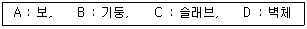
- A-B-C-D
- A-C-B-D
- C-A-D-B
- D-C-B-A
(정답률: 65%)
108. 미리 작업장소의 지형 및 지반상태 등에 적합한 제한속도를 정하지 않아도 되는 차량계 건설기계의 속도 기준은?
- 최고속도가 10km/h 이하
- 최고속도가 20km/h 이하
- 최고속도가 30km/h 이하
- 최고속도가 40km/h 이하
(정답률: 72%)
109. 환산재해지수의 산정기준 중 사망재해자에 대하여 가중치를 부여할 수 있는 경우는?
- 폭풍, 폭우, 폭설 등 천재지변에 의한 경우
- 법원의 판결 등에 의하여 사업주의 무과실이 인정되는 경우
- 건설작업과 관련이 있는 경우
- 교통사고 또는 고혈압 등 개인지병에 의한 경우
(정답률: 65%)
110. 이동식 크레인을 사용하여 작업을 할 때 작업시작 전점검사항이 아닌 것은?
- 트롤리가 횡행하는 레일의 상태
- 권과방지장치 그 밖의 경보장치의 기능
- 브레이크, 클러치 및 조정장치의 기능
- 와이어로프가 통하고 있는 곳 및 작업장소의 지반상태
(정답률: 54%)
111. 다음 중 건물기초에서 발파허용진동치 규제 기준으로 옳지 않은 것은?
- 문화재 : 0.2om/sec
- 주택, 아파트 : 0.5omsec
- 상가 : 1.0om/sec
- 철골콘크리트 빌딩 : 0.1 ~ 0.5om/sec
(정답률: 65%)
112. 다음 중 사용을 금지해야 하는 부적격한 와이어로프가 아닌 것은?
- 이음매가 없는 것
- 와이어로프의 한 꼬임에서 끊어진 소선의 수가 10%이상 인 것
- 지름의 감소가 공칭지름의 7%를 초과하는 것
- 꼬인 것
(정답률: 69%)
113. 낙하물에 의한 위험방지 조치의 기준으로서 옳은 것은?
- 높이가 최소 2m 이상인 곳에서 물체를 투하하는 때에는 적당한 투하설비를 갖춰야 한다.
- 낙하물방지망은 높이 12m 이내마다 설치한다.
- 방호선반 설치시 내민 길이는 벽면으로부터 2m 이상으로 한다.
- 낙하물방지망의 설치각도는 수평면과 30 ~ 40°를 유지한다.
(정답률: 46%)
114. 다음 중 강관비계 조립시의 준수사항과 관련이 없는것은?
- 비계기둥에는 미끄러지거나 침하하는 것을 방지하기 위하여 밑받침철물을 사용한다.
- 지상높이 4층 이하 또는 12m 이하인 건축물의 해체 및 조립등의 작업에서만 사용한다.
- 교차가새로 보강한다.
- 쌍줄비계 또는 돌출비계에 대하여는 벽이음 및 버팀을 설치한다.
(정답률: 68%)
115. 말비계를 조립하여 사용할 때에 준수하여야 할 사항으로 옳지 않은 것은?
- 말비계의 높이가 2m를 초과할 경우에는 작업발판의 폭을 30cm 이상으로 할 것
- 지주부재와 수평면과의 기울기는 75° 이하로 할 것
- 지주부재의 하단에는 미끄럼 방지장치를 할 것
- 지주부재와 지주부재 사이를 고정시키는 보조부재를 설치할 것
(정답률: 64%)
116. 다음 항목 중 건설공사 유해・위험방지계획서 제출대상 공사가 아닌 것은?
- 지상높이가 50m인 건축물 또는 공작물 건설공사
- 연면적이 10,000m2 인 건축물 건설공사
- 최대지간길이가 60m 인 건축물 교량건설공사
- 터널건설공사
(정답률: 63%)
117. 다음 중 달비계의 최대적재하중을 정함에 있어서 활용하는 안전계수의 기준으로 옳은 것은? (단, 곤돌라의 달비계를 제외한다.)
- 달기와이어로프 :５이상
- 달기강선 : 5 이상
- 달기체인 : 3 이상
- 달기훅 : 5 이상
(정답률: 63%)
118. 다음 중 그물코의 크기가 5cm인 매듭방망의 폐기기준 인장강도는?
- 200kg
- 100kg
- 60kg
- 30kg
(정답률: 65%)
119. 연암지반을 인력으로 굴착할 때, 연직높이가 2m 일때, 수평길이는 최소 얼마 이상이 필요한가?
- 2.0m 이상
- 1.5m 이상
- 1.0m 이상
- 0.5m 이상
(정답률: 53%)
120. 철골작업에서는 강풍과 같은 악천후시 작업을 중지하도록 하여야 하는데, 건립작업을 중지하여야 하는 풍속기준은?
- 7m/s 이상
- 10m/s 이상
- 14m/s 이상
- 17m/s 이상
(정답률: 76%)